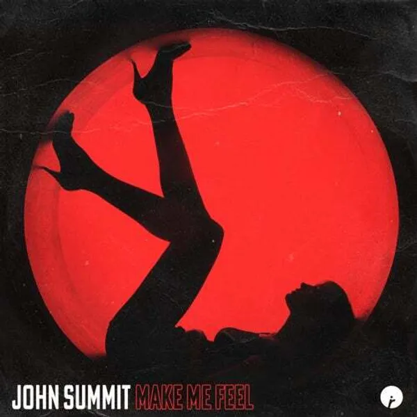
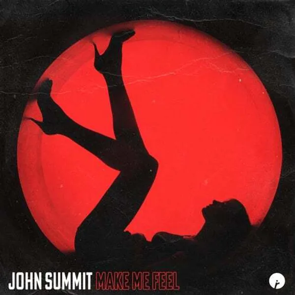

HHHHHHOUSE MUSIC
FRED AGAIN
DIPLO
PEGGYGOU
DAFTPUNK
SWEDISHHOUSEMAF
JOHNSUMMIT
House music is trendy among teens because of its vibrant energy, social appeal, and connection to youth culture. Its infectious beats and uplifting rhythms make it perfect for social events, parties, and festivals where teens connect and express themselves. The genre’s adaptability to mainstream trends, including collaborations with popular artists and influencers, ensures it stays relevant in the digital age. Platforms like TikTok have also played a huge role, with house music often accompanying viral dance challenges and videos. Additionally, house music embodies themes of freedom, self-expression, and inclusivity—values that resonate deeply with younger generations. Its mix of nostalgia (drawing from retro influences) and modern innovation makes it both timeless and exciting, cementing its status as a go-to genre for teens seeking fun, connection, and individuality.

 
